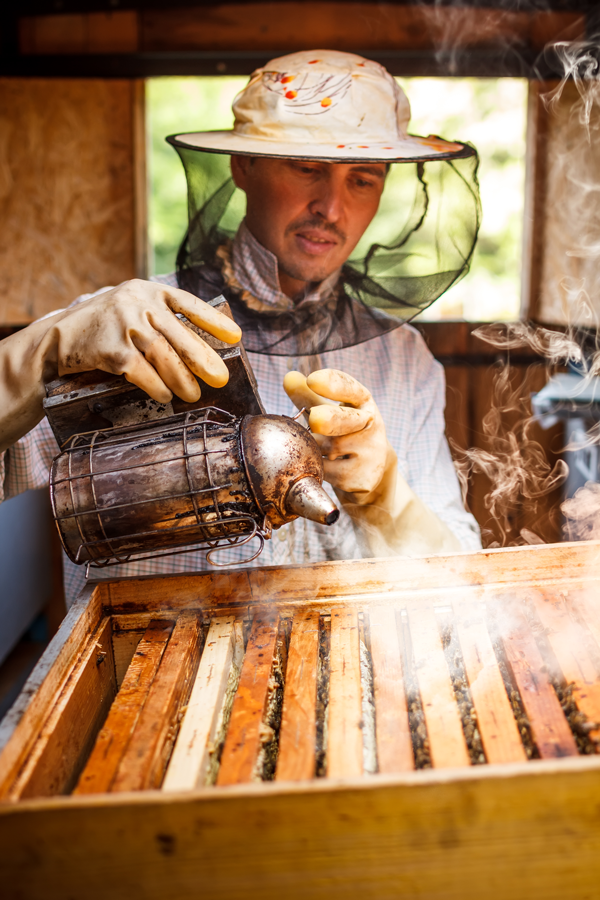
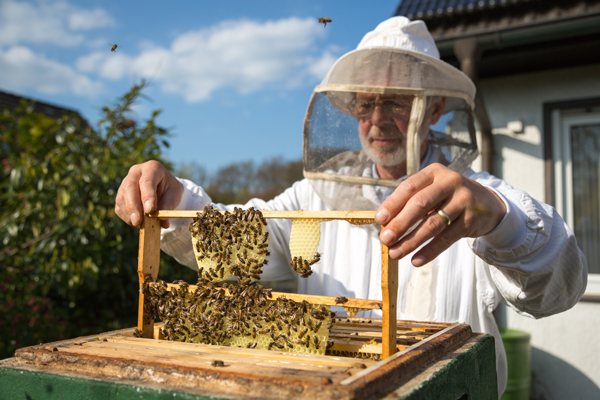

ФАРМАТА
Пчеларската фарма "ЕКО МЕД" е релативно нова пчеларска фарма која се наоѓа во еколошки чистиот предел на кумановската котлина на оддалеченост од најмалку 20км од било каква индустрија. Целта за формирање на пчелната фарма е да се произведува чист, природен, необработуван, вкусен и здрав мед.
ИНТЕРЕСНИ ФАКТИ
1,1,2,3,5,8...
Фибоначиева низа
Пчелите и нивното размножување се совршен пример за Фибоначиева низа во природата. Машките пчели се создаваат од неоплодени јајца на матицата и тие имаат само еден родител. Пчелите работнички се добиваат од оплодените јајца и имаат двајца родители. Така се добива репродуктивната шема на пчелите по низата на Фибоначи 1,1,2,3,5,8... >> Прочитај Повеќе

365
дена во годината
Грижата за пчелите е постојана на нашата фарма 365 дена во годината. Нивната благосотојба е наша обврска, а за возврат го добиваме највкусниот природен мед.

600
пчели
Толку пчели го посветуваат целиот свој животен век, притоа колективно поминуваат повеќе од 100.000 километри за да создадат само половина килограм мед.

СОЗДАВАЊЕ НА МЕДОТ
Медот на почетокот е само цветен нектар кој се собира од пчелите и потоа се разложува на прости шеќери во саќето. Дизајнот на саќето и константното вентилирање на крилата на пчелите предизвикуваат испарување, создавајќи сладок течен мед. Бојата на медот и вкусот зависат од нектарот кој тие го имаат собрано. На пример, медот направен од багремов нектар ќе биде посветол, додека медот направен од нектар од планински растинија ќе биде темен.
Во просек, од една пчелна кошница годишно добиваме по околу 30кг мед. Потоа се медот се собира така што се вади саќето од кошниците и се отстрануваат природните восочни капаци што пчелите ги користат за да го запечатат медот во секоја ќелија. Откако ќе се извадат капачињата, рамките се ставаат во вртечка центрифуга за да се екстрактира медот од нив.

ПРИРОДА
Бидејќи медот е 100% природен производ, затоа е многу важно природно опкружување во кое тие егзистираат. Затоа нашите пчелните кошници се опкружени со недопрена природа и се наоѓаат во предел скоро ненаселен со луѓе со што се избегнува било какво загадување што го предизвикува човекот. Медот го собираат од повеќе медоносни растенија меѓу кои се:
- Драка
- Куманика
- Синап
- Детелина
- Слива
- Кајсија
- Круша и др.